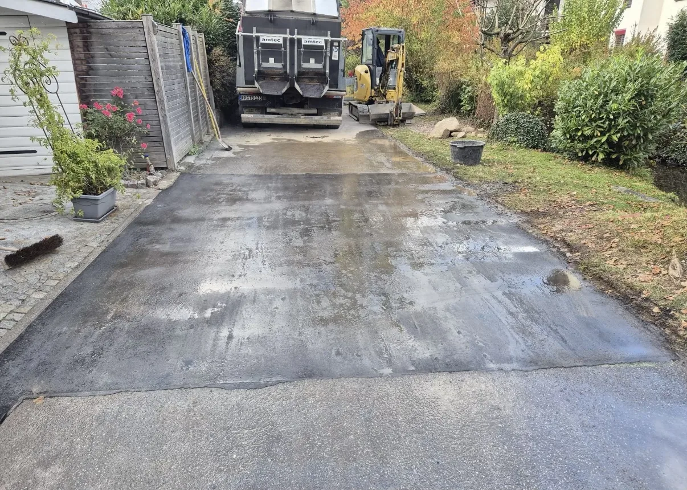

01 / HAUPTLEISTUNG
Asphaltbau
Asphaltierung von Einfahrten und Hofflächen, Reparaturen und Ausbesserungen sowie Wiederherstellung von Asphaltflächen. Eine eigene Asphalt-Thermobox unterstützt den temperaturgeschützten Heißasphalttransport.